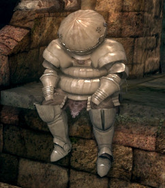

As imagens abaixo foram baixadas diretamente do google imagens e foram inalteradas.


As imagens abaixo são jpgs com dimensões alteradas e resgatados de uma pasta.
Abaixo está um exemplo do que acontece quando uma imagem não pode ser carregada.

Também é possivel carregar imagens externas.